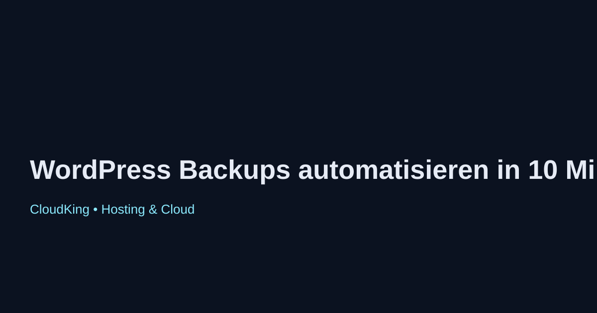

WordPress Backups automatisieren in 10 Minuten
Die regelmäßige Sicherung Ihrer WordPress-Website ist entscheidend, um Datenverlust zu vermeiden. In diesem Artikel zeigen wir Ihnen, wie Sie in nur 10 Minuten automatisierte Backups einrichten können.
Warum sind Backups wichtig?
Backups schützen Ihre Website vor Datenverlust durch Hacks, Serverausfälle oder Fehler bei Software-Updates. Ein aktuelles Backup ermöglicht es Ihnen, Ihre Seite schnell wiederherzustellen.
Schritt-für-Schritt-Anleitung
- Wählen Sie ein Backup-Plugin: Es gibt viele Plugins wie UpdraftPlus, BackupBuddy oder Duplicator. Wählen Sie eines, das Ihren Anforderungen entspricht.
- Installieren und aktivieren Sie das Plugin: Gehen Sie zu Plugins > Installieren und suchen Sie nach dem gewählten Plugin.
- Konfigurieren Sie die Backup-Einstellungen: Legen Sie fest, wie oft und wo die Backups gespeichert werden sollen (z. B. in der Cloud).
- Planen Sie automatische Backups: Viele Plugins bieten eine Funktion zur Planung, die es Ihnen ermöglicht, Backups zu festgelegten Zeiten automatisch durchzuführen.
- Testen Sie das Backup: Führen Sie ein manuelles Backup durch und stellen Sie sicher, dass die Wiederherstellung funktioniert.
Fazit
Die Automatisierung von Backups ist ein einfacher, aber effektiver Weg, um die Sicherheit Ihrer WordPress-Website zu gewährleisten. Mit den richtigen Tools und Einstellungen können Sie in nur 10 Minuten einen soliden Backup-Plan aufstellen.